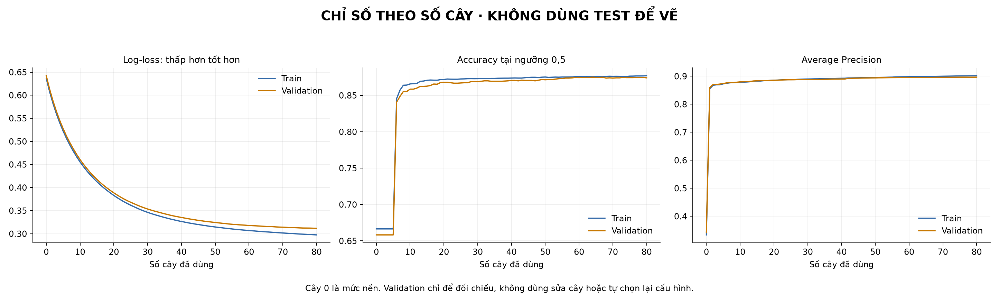

Gói GitHub giữ đầy đủ CSV/CSV.GZ/JSON, không kèm bộ ảnh cây/histogram lớn.
Hướng dẫn gói · Ý nghĩa cột · Dự báo và đánh giá · Sơ đồ cơ chế · Chỉ số theo số cây · 10 dòng qua 80 cây

| Cây | Số lá | Điều kiện nút gốc | Dữ liệu đối chiếu |
|---|---|---|---|
| Cây 1 | 15 | Column_12 ≤ 1.5000000000000002 | Nút · Lá · Bin · Từng dòng / G-H · Cấu trúc |
| Cây 2 | 15 | Column_12 ≤ 1.5000000000000002 | Nút · Lá · Bin · Từng dòng / G-H · Cấu trúc |
| Cây 3 | 15 | Column_12 ≤ 1.5000000000000002 | Nút · Lá · Bin · Từng dòng / G-H · Cấu trúc |
| Cây 4 | 15 | Column_12 ≤ 1.5000000000000002 | Nút · Lá · Bin · Từng dòng / G-H · Cấu trúc |
| Cây 5 | 15 | Column_12 ≤ 1.5000000000000002 | Nút · Lá · Bin · Từng dòng / G-H · Cấu trúc |
| Cây 6 | 15 | Column_12 ≤ 1.5000000000000002 | Nút · Lá · Bin · Từng dòng / G-H · Cấu trúc |
| Cây 7 | 15 | Column_10 ≤ 28.500000000000004 | Nút · Lá · Bin · Từng dòng / G-H · Cấu trúc |
| Cây 8 | 15 | Column_12 ≤ 1.5000000000000002 | Nút · Lá · Bin · Từng dòng / G-H · Cấu trúc |
| Cây 9 | 15 | Column_10 ≤ 28.500000000000004 | Nút · Lá · Bin · Từng dòng / G-H · Cấu trúc |
| Cây 10 | 15 | Column_10 ≤ 28.500000000000004 | Nút · Lá · Bin · Từng dòng / G-H · Cấu trúc |
| Cây 11 | 15 | Column_12 ≤ 1.5000000000000002 | Nút · Lá · Bin · Từng dòng / G-H · Cấu trúc |
| Cây 12 | 15 | Column_10 ≤ 37.50000000000001 | Nút · Lá · Bin · Từng dòng / G-H · Cấu trúc |
| Cây 13 | 15 | Column_10 ≤ 37.50000000000001 | Nút · Lá · Bin · Từng dòng / G-H · Cấu trúc |
| Cây 14 | 15 | Column_10 ≤ 37.50000000000001 | Nút · Lá · Bin · Từng dòng / G-H · Cấu trúc |
| Cây 15 | 15 | Column_10 ≤ 37.50000000000001 | Nút · Lá · Bin · Từng dòng / G-H · Cấu trúc |
| Cây 16 | 15 | Column_10 ≤ 37.50000000000001 | Nút · Lá · Bin · Từng dòng / G-H · Cấu trúc |
| Cây 17 | 15 | Column_10 ≤ 37.50000000000001 | Nút · Lá · Bin · Từng dòng / G-H · Cấu trúc |
| Cây 18 | 15 | Column_10 ≤ 37.50000000000001 | Nút · Lá · Bin · Từng dòng / G-H · Cấu trúc |
| Cây 19 | 15 | Column_10 ≤ 47.50000000000001 | Nút · Lá · Bin · Từng dòng / G-H · Cấu trúc |
| Cây 20 | 15 | Column_10 ≤ 47.50000000000001 | Nút · Lá · Bin · Từng dòng / G-H · Cấu trúc |
| Cây 21 | 15 | Column_10 ≤ 47.50000000000001 | Nút · Lá · Bin · Từng dòng / G-H · Cấu trúc |
| Cây 22 | 15 | Column_10 ≤ 47.50000000000001 | Nút · Lá · Bin · Từng dòng / G-H · Cấu trúc |
| Cây 23 | 15 | Column_10 ≤ 47.50000000000001 | Nút · Lá · Bin · Từng dòng / G-H · Cấu trúc |
| Cây 24 | 15 | Column_10 ≤ 47.50000000000001 | Nút · Lá · Bin · Từng dòng / G-H · Cấu trúc |
| Cây 25 | 15 | Column_10 ≤ 47.50000000000001 | Nút · Lá · Bin · Từng dòng / G-H · Cấu trúc |
| Cây 26 | 15 | Column_10 ≤ 47.50000000000001 | Nút · Lá · Bin · Từng dòng / G-H · Cấu trúc |
| Cây 27 | 15 | Column_10 ≤ 47.50000000000001 | Nút · Lá · Bin · Từng dòng / G-H · Cấu trúc |
| Cây 28 | 15 | Column_10 ≤ 47.50000000000001 | Nút · Lá · Bin · Từng dòng / G-H · Cấu trúc |
| Cây 29 | 15 | Column_10 ≤ 47.50000000000001 | Nút · Lá · Bin · Từng dòng / G-H · Cấu trúc |
| Cây 30 | 15 | Column_10 ≤ 47.50000000000001 | Nút · Lá · Bin · Từng dòng / G-H · Cấu trúc |
| Cây 31 | 15 | Column_10 ≤ 47.50000000000001 | Nút · Lá · Bin · Từng dòng / G-H · Cấu trúc |
| Cây 32 | 15 | Column_10 ≤ 47.50000000000001 | Nút · Lá · Bin · Từng dòng / G-H · Cấu trúc |
| Cây 33 | 15 | Column_10 ≤ 47.50000000000001 | Nút · Lá · Bin · Từng dòng / G-H · Cấu trúc |
| Cây 34 | 15 | Column_10 ≤ 47.50000000000001 | Nút · Lá · Bin · Từng dòng / G-H · Cấu trúc |
| Cây 35 | 15 | Column_10 ≤ 47.50000000000001 | Nút · Lá · Bin · Từng dòng / G-H · Cấu trúc |
| Cây 36 | 15 | Column_10 ≤ 47.50000000000001 | Nút · Lá · Bin · Từng dòng / G-H · Cấu trúc |
| Cây 37 | 15 | Column_10 ≤ 47.50000000000001 | Nút · Lá · Bin · Từng dòng / G-H · Cấu trúc |
| Cây 38 | 15 | Column_10 ≤ 47.50000000000001 | Nút · Lá · Bin · Từng dòng / G-H · Cấu trúc |
| Cây 39 | 15 | Column_10 ≤ 47.50000000000001 | Nút · Lá · Bin · Từng dòng / G-H · Cấu trúc |
| Cây 40 | 15 | Column_10 ≤ 47.50000000000001 | Nút · Lá · Bin · Từng dòng / G-H · Cấu trúc |
| Cây 41 | 15 | Column_10 ≤ 47.50000000000001 | Nút · Lá · Bin · Từng dòng / G-H · Cấu trúc |
| Cây 42 | 15 | Column_9 ≤ 0.4772727272727273 | Nút · Lá · Bin · Từng dòng / G-H · Cấu trúc |
| Cây 43 | 15 | Column_10 ≤ 47.50000000000001 | Nút · Lá · Bin · Từng dòng / G-H · Cấu trúc |
| Cây 44 | 15 | Column_9 ≤ 0.4772727272727273 | Nút · Lá · Bin · Từng dòng / G-H · Cấu trúc |
| Cây 45 | 15 | Column_10 ≤ 47.50000000000001 | Nút · Lá · Bin · Từng dòng / G-H · Cấu trúc |
| Cây 46 | 15 | Column_9 ≤ 0.4772727272727273 | Nút · Lá · Bin · Từng dòng / G-H · Cấu trúc |
| Cây 47 | 15 | Column_9 ≤ 0.4772727272727273 | Nút · Lá · Bin · Từng dòng / G-H · Cấu trúc |
| Cây 48 | 15 | Column_10 ≤ 47.50000000000001 | Nút · Lá · Bin · Từng dòng / G-H · Cấu trúc |
| Cây 49 | 15 | Column_9 ≤ 0.4772727272727273 | Nút · Lá · Bin · Từng dòng / G-H · Cấu trúc |
| Cây 50 | 15 | Column_9 ≤ 0.4772727272727273 | Nút · Lá · Bin · Từng dòng / G-H · Cấu trúc |
| Cây 51 | 15 | Column_9 ≤ 0.4772727272727273 | Nút · Lá · Bin · Từng dòng / G-H · Cấu trúc |
| Cây 52 | 15 | Column_10 ≤ 47.50000000000001 | Nút · Lá · Bin · Từng dòng / G-H · Cấu trúc |
| Cây 53 | 15 | Column_9 ≤ 0.4772727272727273 | Nút · Lá · Bin · Từng dòng / G-H · Cấu trúc |
| Cây 54 | 15 | Column_9 ≤ 0.4772727272727273 | Nút · Lá · Bin · Từng dòng / G-H · Cấu trúc |
| Cây 55 | 15 | Column_9 ≤ 0.4772727272727273 | Nút · Lá · Bin · Từng dòng / G-H · Cấu trúc |
| Cây 56 | 15 | Column_10 ≤ 80.50000000000001 | Nút · Lá · Bin · Từng dòng / G-H · Cấu trúc |
| Cây 57 | 15 | Column_9 ≤ 0.4772727272727273 | Nút · Lá · Bin · Từng dòng / G-H · Cấu trúc |
| Cây 58 | 15 | Column_10 ≤ 80.50000000000001 | Nút · Lá · Bin · Từng dòng / G-H · Cấu trúc |
| Cây 59 | 15 | Column_9 ≤ 0.4772727272727273 | Nút · Lá · Bin · Từng dòng / G-H · Cấu trúc |
| Cây 60 | 15 | Column_10 ≤ 80.50000000000001 | Nút · Lá · Bin · Từng dòng / G-H · Cấu trúc |
| Cây 61 | 15 | Column_9 ≤ 0.4772727272727273 | Nút · Lá · Bin · Từng dòng / G-H · Cấu trúc |
| Cây 62 | 15 | Column_10 ≤ 80.50000000000001 | Nút · Lá · Bin · Từng dòng / G-H · Cấu trúc |
| Cây 63 | 15 | Column_9 ≤ 0.4772727272727273 | Nút · Lá · Bin · Từng dòng / G-H · Cấu trúc |
| Cây 64 | 15 | Column_10 ≤ 80.50000000000001 | Nút · Lá · Bin · Từng dòng / G-H · Cấu trúc |
| Cây 65 | 15 | Column_9 ≤ 0.4222222222222223 | Nút · Lá · Bin · Từng dòng / G-H · Cấu trúc |
| Cây 66 | 15 | Column_10 ≤ 80.50000000000001 | Nút · Lá · Bin · Từng dòng / G-H · Cấu trúc |
| Cây 67 | 15 | Column_10 ≤ 88.50000000000001 | Nút · Lá · Bin · Từng dòng / G-H · Cấu trúc |
| Cây 68 | 15 | Column_9 ≤ 0.4222222222222223 | Nút · Lá · Bin · Từng dòng / G-H · Cấu trúc |
| Cây 69 | 15 | Column_9 ≤ 0.4222222222222223 | Nút · Lá · Bin · Từng dòng / G-H · Cấu trúc |
| Cây 70 | 15 | Column_10 ≤ 88.50000000000001 | Nút · Lá · Bin · Từng dòng / G-H · Cấu trúc |
| Cây 71 | 15 | Column_9 ≤ 0.4772727272727273 | Nút · Lá · Bin · Từng dòng / G-H · Cấu trúc |
| Cây 72 | 15 | Column_9 ≤ 0.4222222222222223 | Nút · Lá · Bin · Từng dòng / G-H · Cấu trúc |
| Cây 73 | 15 | Column_10 ≤ 88.50000000000001 | Nút · Lá · Bin · Từng dòng / G-H · Cấu trúc |
| Cây 74 | 15 | Column_10 ≤ 88.50000000000001 | Nút · Lá · Bin · Từng dòng / G-H · Cấu trúc |
| Cây 75 | 15 | Column_9 ≤ 0.4222222222222223 | Nút · Lá · Bin · Từng dòng / G-H · Cấu trúc |
| Cây 76 | 15 | Column_9 ≤ 0.4222222222222223 | Nút · Lá · Bin · Từng dòng / G-H · Cấu trúc |
| Cây 77 | 15 | Column_10 ≤ 88.50000000000001 | Nút · Lá · Bin · Từng dòng / G-H · Cấu trúc |
| Cây 78 | 15 | Column_10 ≤ 91.50000000000001 | Nút · Lá · Bin · Từng dòng / G-H · Cấu trúc |
| Cây 79 | 15 | Column_9 ≤ 0.4222222222222223 | Nút · Lá · Bin · Từng dòng / G-H · Cấu trúc |
| Cây 80 | 15 | Column_9 ≤ 0.4772727272727273 | Nút · Lá · Bin · Từng dòng / G-H · Cấu trúc |